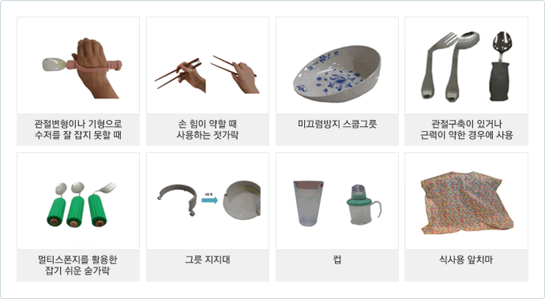
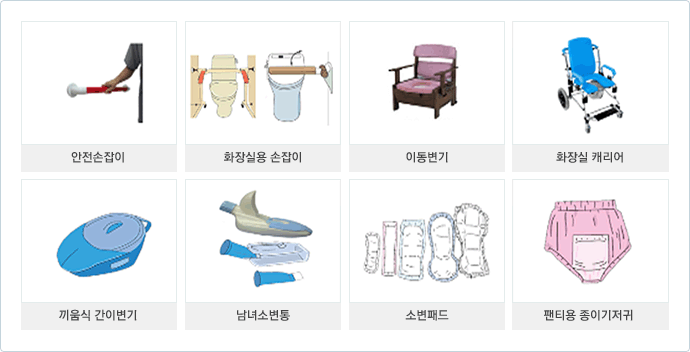
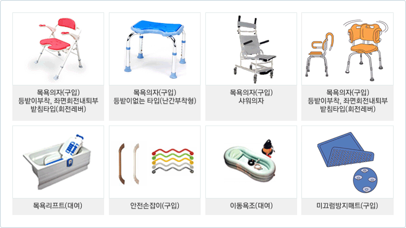
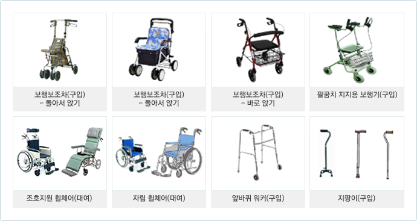
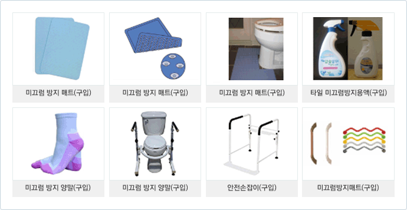
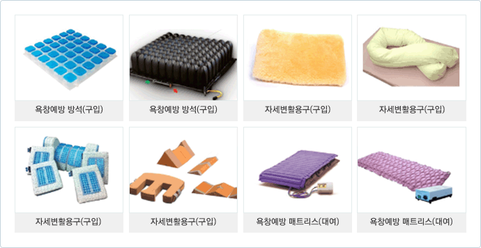

치매에 대해 가능한 많이 알아야 합니다.
치매가 무언지 그리고 어떻게 환자를 돌보아야 하는지 많이 알아야 치매가 환자에 어떤 영향을 주고 어떤 변화를 가져올 수 있는지를 예측할 수 있습니다. 이런 정보를 가족 구성원, 친구, 함께 일하는 분 등 가까운 사람들과 공유하는 것이 환자를 이해하는데 도움이 됩니다.
치매로 인해 환자의 능력이 점점 감소한다는 것을 받아들입니다.
치매는 시간에 따라 진행합니다. 따라서 환자는 점점 변해갑니다. 이런 변화를 인정해야 환자에게 현실적인 도움을 줄 수 있습니다. 참을성은 치매를 돌보는 사람이 가져야 하는 근본적인 미덕 중 하나입니다.
치매 환자도 할 수 있는 것이 있다는 것을 잊지 말아야 합니다.
많은 것은 못하더라도 작은 일은 할 수 있습니다. 아무것도 할 수 없는 말기에도 감정은 지속됩니다. 치매환자가 무시되고 방치되어서는 안 되는 이유입니다. 할 수 있는 것이 있을 때 최대한 즐길 수 있도록 하세요. 시간은 되돌려지지 않습니다.
당신의 감정은 자연스러운 것입니다.
치매 가족들은 최초 진단 후 분노, 거부, 당황, 좌절, 두려움, 슬픔, 죄책감 같은 다양한 느낌들을 가질 수 있습니다. 이런 감정은 매우 흔하고 일시적인 경우가 많습니다. 앞으로도 치매환자를 돌보다 보면 당혹, 분노, 슬픔 등 여러 가지 감정들이 생깁니다. 책임, 봉사, 희생이 만능은 아닙니다.
적극적으로 도움을 구하십시오.
잘 찾아보면 주변에는 도움을 줄 수 있는 지역사회 서비스 기관들이 있습니다. 다른 가족과 친구들도 도움을 줄 수 있습니다. 비슷한 경험을 하고 있는 가족들과 모임을 가질 수도 있습니다.
식사조호
- 불편감 없이 식사하도록 도와주어야 하며 적절한 영양소가 공급되고 있는지를 살펴보아야 합니다.
- 조용하고 편안하게 식사할 수 있는 청결한 환경은 식욕을 증진시킵니다. 주위에 변기나 쓰레기통 등이 있으면 치우고 식사 전에 화장실을 미리 다녀오도록 하고 손을 씻습니다.
- 대상자의 건강상태에 따라 일반식, 유동식, 치료식 등을 제공합니다. 즉, 대상자의 씹거나 삼키는 능력을 고려하여 음식물의 형태와 크기를 적절히 준비 합니다. 딱딱하고 씹기 어려운 음식은 식도를 통과하기 어렵고 점막에 달라붙는 떡 종류나 바나나 등은 사레가 들리거나 질식하기 쉬우므로 주의를 요합니다.
- 식욕이 없는 경우에는 적은 양의 음식을 여러 가지 준비하고 부식(副食)은 색깔을 고려하여 보기 좋게 하여 식욕이 증진되도록 합니다.
- 의치가 있거나, 의치가 있어도 맞지 않은 대상자의 경우 참깨, 겨자씨 등은 잇몸 사이에 낄 우려가 있으므로 곱게 갈아 으깨서 제공합니다.
- 음식을 제공할 때는 항상 대상자가 사레가 들려 질식할 위험이 있으니 다음과 같은 사항에 주의가 필요합니다.
- 삼키기 쉬운 자세를 취합니다. : 누운 채 식사를 하는 것은 위험하므로 가능한 한 의자등을 이용하여 앉은 자세를 유지시켜 주는데, 이때 상체를 약간 앞으로 숙이고 턱을 당기는 자세가 좋습니다. 의자에 앉을 수 없는 대상자는 상반신을 높게 해주고 턱을 당긴 자세를 취해 줍니다.
- 복부와 가슴을 압박하지 않는 옷과 침구를 사용합니다.
- 삼키기 쉽도록 된장국, 수프, 차, 물 등으로 먼저 목과 입안을 축이고 나서 고형물질을 섭취하도록 합니다.
- 충분히 씹어 먹을 수 있는 양을 입에 넣어주고, 완전히 삼켰는지를 확인하고 난 다음에 음식을 입안에 넣어 줍니다.
- 고형물질과 국물을 번갈아 섭취하도록 합니다.
- 음식을 씹고 있는 도중 대상자가 대답을 해야 하는 질문은 하지 않도록 합니다.
- 의식상태가 저하된 대상자가 대답을 해야 하는 질문은 하지 않습니다.
- 기침, 천식, 구역질, 치아의 유무 및 상태를 항상 관찰합니다. 이상이 있을 시에는 음식 주는 것을 중단하고 적합한 방법을 의료진과 상의 합니다.
- 많은 음식을 한꺼번에 주지 않습니다.
식사보조에 활용되는 생활용품

올바른 식사자세

앉은 자세에서의 식사 돕기
- 쿠션 등을 사용하여 편안하게 앉도록 자세를 고정합니다.
- 필요시 앞치마를 착용합니다.
- 식단을 설명하고 식기, 젓가락, 구저, 포크 등을 사용하기 편한 위치에 둡니다.
배설 조호
- 요의나 변의를 느껴도 화장실을 찾지 못하거나, 장소를 잘 못 알거나, 배설을 억제하지 못하거나 하여 참지 못하고 배설해 버리는 경우가 있습니다. 이럴 때는 화장실이 아닌 곳이라고 화를 내거나 소리를 지르지 말아야 합니다.
- 배설에 대한 실수를 알지 못하는 경우도 있고, 이미 알고 있는 경우에는 창피스러워 하거나 자존심에 상처를 입어 오히려 숨기는 행위를 보이기도 합니다.
- 배설행위 절차를 상실하거나, 착ㆍ탈의가 쉽지 않아 실수를 하는 경우도 발생합니다.
- 계속 반복해서 화장실에 가는 경우 마음대로 수분섭취량을 줄이면 요로 감염이 생길 위험이 증가합니다.
- 대소변을 손으로 만지거나 벽 등에 바르는 경우에는 너무 화를 내지 말고 부드럽게 아무렇지도 않은 것처럼 뒤처리를 해주어 자존심에 상처를 주지 않도록 합니다.
- 간혹 항문에 손을 넣어 대변을 묻히는 경우에는 먼저 변비가 있는지 여부를 확인하고 변비를 예방할 수 있는 음식섭취를 권장합니다.
- 대변을 먹거나 소변을 마시는 경우에는 배가 고프거나 목이 말라서 그럴 수 있으므로 물과 컵도 준비해 두고 간단한 간식도 준비합니다.
- 기저귀를 싫어하고 폭력을 휘두르는 경우에는 가능한 친절하게 설명한 뒤 시간을 가지고 여유롭게 기다린 후 다시 시도합니다.
- 배설한 후 속옷을 숨기는 경우에는 화를 내거나 야단을 치지 말고 방에 감출 수 있는 수납공간을 최대한 줄이고 빨래통에 넣을 수 있게 시범을 보여줍니다.
배설 환경 개선
- 화장실 안에나 가까운 곳에 속옷이나 바지를 수납할 수 있는 공간을 설치하여 그 공간에서 대응이 가능하도록 합니다.
- 배설행위, 화장실 방향안내, 수전 장치, 배설절차 등을 종이에 적거나, 삽화를 사용하거나, 본인의 절차 착오나 기억 상실을 보충할 수 있는 정보를 제공합니다.
- 화장실 이외의 장소(침실, 복도 등)에 이동변기를 설치하고, 배설행위의 기회와 장소를 늘리는 것도 좋습니다.
침상에서 이동변기로 혼자 이동 가능한 경우
침상에서 휠체어로 화장실 가기
- 침상 가까이에 침대와 평행하게 휠체어를 놓습니다. 옮기는 동안 대상자가 다치지 않도록 휠체어는 고정하고, 발 받침대는 올려 둡니다.
- 대상자를 침대에 걸터앉힌 후 대상자의 발 사이에 조호자의 발을 넣고 대상자의 허리를 끌어안아 들어올려 90°로 회전하여 휠체어로 옮깁니다. 이 때 대상자의 두 손으로 조호자의 목에 감도록 하면 편안한 자세가 될 수 있습니다.
- 대상자의 허리띠를 잡거나 보행 벨트(보행 시 뒤 또는 옆에서 손잡이를 잡으면서 보조할 수 있도록 만들어진 벨트)를 잡아 활용하면 손이 미끄러지지 않습니다.
- 대상자가 어느 정도 힘을 줄 수 있는 경우라면 대상자 스스로 힘을 주어 옮기도록 하는데, 이 때 대상자 무릎에 조호자의 무릎을 대어 지지하여, 무릎에 힘이 풀리면서 주저앉는 것을 대비합니다.
- 편마비 대상자의 경우 건강한 쪽에 힘을 실어 침대 옆 휠체어 가까이에 서도록 합니다. 이때 건강한 쪽 손으로 침상 난간을 잡도록 합니다. 침상 난간이 없는 경우라면 조호제공자에게 지지하도록 합니다. 대상자의 건강한 쪽 손으로 침대에서 가까운 쪽 휠체어 손잡이를 잡으면서 몸을 숙이고 몸을 앞쪽으로 조금 이동한 뒤 다시 반대편 손잡이로 손을 옮기도록 하고 대상자의 건강한 발을 중심으로 90° 회전시켜 휠체어에 앉힙니다.
- 휠체어에 앉은 후에는 깊게 앉도록 몸을 뒤로 당겨주고 발 받침대에 발을 놓습니다.
- 화장실로 이동한 후 휠체어의 잠금장치를 걸고 발 받침대를 접은 후 대상자의 허리를 감아 일으켜 세운 후 대상자의 몸을 90° 회전시켜 변기 앞에 세우고 바지를 내린 후 변기에 앉힙니다.
- 배설을 마친 후 (대상자 스스로 할 수 없는 경우에는 뒤처리를 해 준 뒤) 휠체어에 앉힙니다. 세면대에서 대상자가 손을 씻도록 돕습니다.
- 휠체어에서 침상으로 안전하게 이동하도록 보조해 줍니다.
배설조호에 활용되는 복지용구

목욕 조호
- 신체 청결의 필요성을 설명하고 목욕에 대한 동의를 얻은 후 실시 하고, 심신 상태가 좋지 않아 거부하는 경우에는 무리하게 권하지는 않습니다.
- 목욕에 필요한 신체상태 확인이 필요합니다. 즉 안색, 표정, 수면, 식욕 등을 관찰하고 목욕에 필요한 정보를 수집합니다.
- 식사 직후나 공복 시의 목욕은 피해야합니다.
- 심신의 긴장이 풀려 욕조에서 실금하지 않도록 미리 배뇨와 배변을 유도합니다.
- 목욕공간을 커튼이나 스크린을 달아 사생활을 보호 할 수 있게 합니다.
- 욕실과 탈의실의 온도차를 줄여 감기를 예방합니다.
- 안전을 위해 미끄럼방지 매트리스, 안전손잡이 등을 활용하고 조명은 밝게 합니다.
- 비누 등에 미끄러져 넘어지지 않도록 사용한 물품을 바로바로 정리합니다.
목욕조호 시 주의사항
- 느긋하게 목욕을 즐기면서 심신의 피로를 풀 수 있고 생활의 즐거움을 줄 수 있어야 합니다.
- 건강한 생활을 유지하기 위한 생활습관 형성이 필요합니다.
- 안전사고가 발생하지 않도록 세심한 주의를 기울여야 합니다.
- 알몸 노출에 대해 수치심을 느낄 수 있다는 점을 고려하여 많은 배려가 필요합니다.
- 가능한 스스로 씻을 수 있도록 격려하고 배려하여 재활을 도울 수 있어야 합니다.
욕조 목욕 조호
- 욕조에 70%정도의 물을 받고, 실내온도는 22~26도 유지, 바람이 들어오지 않도록 창문, 욕실 문을 닫습니다.
- 물품은 사용자의 가까운 곳에 준비합니다.
- 목욕 전 용변을 보도록 합니다.
- 몸 상태(표정, 얼굴색, 열, 혈압, 설사, 콧물 등) 확인하고 피로할 때, 식사 바로 전이나 후는 피합니다.
- 대상자의 욕구와 사생활 존중하여 원하는 방식을 따릅니다.
- 갑자기 몸에 손이 닿으면 불안해하므로 충분히 설명하고 동의를 구한 후 재미있고 즐겁게 목욕을 할 수 있도록 분위기를 만드는 것이 필요합니다.
- 가능한 스스로 하도록 하며 적극적으로 목욕에 참여하도록 유도합니다.
- 욕조에 안전 손잡이, 미끄럼방지 매트 등 설치하여 낙상을 예방하고 안정감 제공합니다.
- 목욕물의 온도는 39~41도 기준으로 하되 개인에 맞게 적정 온도 조절을 합니다.
- 목욕시간은 20~30분 이내로 대상자가 지치지 않도록 합니다.
- 노인의 피부는 건조하므로 건성용 비누 사용합니다. 비누나 샴푸 등 목욕에 사용되는 이물질을 먹는 경우가 발생할 수 있음을 각별히 유념하여야 합니다.
- 목욕 후 한기를 느끼지 않도록 물기를 빨리 닦아줄 타월이나 옷을 미리 준비합니다.
- 목욕 후 따뜻한 차 등으로 수분을 보충합니다.
- 목욕 후 로션이나 오일 등 피부유연제 발라주어 피부건조를 예방합니다.
목욕조호에 활용되는 복지용구

옷 입고 벗기의 실제
- 옷 입기 전에 충분히 설명하고 시간이 걸려도 스스로 혼자 입을 수 있도록 기다려주는 것이 필요합니다.
- 사생활을 보호하고 쾌적한 환경에서 옷을 갈아입을 수 있도록 배려합니다.
- 옷의 선택은 대상자의 취향을 고려하고, 쉽게 입고 벗을 수 있는지를 여부도 함께 고려되어야 합니다.
- 강하게 옷 입는 것을 거부하면 무리하게 갈아입히지 말고 시간을 가지고 여유롭게 대처합니다.
이동에 생기는 문제점
- 방향감각의 저하나 잘못으로 이동 시작점과 마지막이 불분명합니다.
- 목적지, 사람, 이동 목적이 존재하지 않고, 소재지를 정확히 알지 못하는 현상이 일어납니다.
- 본인 스스로는 성실하게 이동하고 있고, 이동하려고 하고 있지만 현실에서는 이룰 수 없게 되고 이로 인해 당황하거나 불안 초조감이 나타나기도 합니다.
부축방법
- 부축하는 사람이 균형을 잃지 않아야 합니다.
- 부축하는 사람은 몸을 앞으로 기울이지 말아야 하며, 앞으로 나아갈 때도 몸을 너무 굽히는 자세를 취해서는 안 됩니다.
- 몸을 구부려야 하는 경우에는 무릎을 굽히고 가능하면 허리를 굽히는 자세를 취하 지 않는 것이 좋습니다.
- 환자가 보호자의 팔을 잡고 걸을 수 있으면 제일 좋으며 그렇지 못한 경우는 보호자가 환자의 겨드랑이에 팔을 넣고 떠받치듯이 잡아야 합니다. 이때 환자에게 보호자의 체중이 실리거나 환자의 체중이 보호자에게 쏠리지 않도록 합니다.
- 보호자가 힘이 들면 어떤 경우이든지 쉬어야 하며 환자를 앞에서 당기는 듯한 자세는 삼가 하는 것이 좋습니다.
침상에서 휠체어로 옮기기
- 치매환자의 발이 바닥에 닿도록 침상의 높이를 낮춥니다.
- 침상 가까이 침상과 평행하게 휠체어를 놓습니다.
- 휠체어의 바퀴를 고정하고 발판을 올리고 대상자를 침상가에 앉도록 돕습니다.
- 환자를 서 있는 상태가 되도록 잠시 지지하고 휠체어 쪽을 향해 함께 회전합니다.
- 환자의 체중을 앞발에서 뒷발로 옮기면서 다리와 팔의 관절을 구부려 바퀴의자로 몸을 낮춥니다.
- 보호자도 앞발로 체중을 옮기면서 무릎을 굽혀 의자 깊숙이 환자를 둡니다.
- 환자의 발을 발판위에 놓아줍니다.
지팡이 사용하기(지팡이는 체중의 20~25%를 지지)
- 건강한 쪽의 손으로 지팡이를 잡고 지팡이의 끝은 환자 발의 앞 15cm, 옆 15cm에 둡니다.
- 체중이 지팡이와 건강한 다리에 의해 지탱되는 동안 지팡이 앞쪽으로 아픈 쪽 다리를 옮깁니다.
- 체중이 지팡이와 아픈 쪽 다리로 지탱되는 동안 지팡이 앞으로 건강한 다리를 옮깁니다.
워커 사용하기
- 환자의 체중이 두 다리에 의해 지탱되는 동안 15cm 가량 앞으로 워커를 옮깁니다.
- 환자의 체중이 왼쪽 다리와 양팔로 지탱되는 동안 오른쪽 발을 워커까지 옮깁니다.
- 체중이 오른쪽 다리와 양팔로 지탱되는 동안 왼쪽 발을 오른발 위치까지 옮깁니다.
- 한쪽 다리가 더 약한 경우 워커와 약한 다리를 동시에 앞으로 옮기고 체중이 약한 다리와 양팔에 의해 지탱되는 동안 건측 다리를 앞으로 옮깁니다.
이동보조 조호에 활용되는 복지용구

* 본문에 관한 자세한 내용을 보시려면 자료 다운을 클릭해 주세요.
제목 : 치매환자의 이동보조/ 저자 : 남서울대학 간호학과 김경숙 교수

낙상 정의
외적인 충격 없이 일상생활을 수행하는 동안 균형이나 안정성을 잃으면서 신체의 일부분이 바닥에 닿은 것, 즉 단순히 넘어지는 것을 의미합니다.
낙상 유발 요인
- 좁아진 시야, 밝고 어둠에 적응하는 능력의 저하, 눈부심에 민감성 증가
- 균형감의 변화로 자세 흔들림과 불안정한 자세
- 보행속도, 보폭, 보행높이 감소
- 자세가 굽어지고 걸을 때 무릎과 고관절이 충분히 펴기 어려워지면 균형을 유지하는 능력이 저하
- 치매노인은 환경의 위험을 잘못 지각하거나 안전한지 위험한지를 잘 판단하지 못함으로 인해 스스로 위험한 환경에 처할 수도 있고, 위험한 상황을 피하지 못함
- 이동능력에 문제가 있으면서 배회할 경우
- 약물 복용(불면으로 수면제를 복용하면 아침에 졸립고 기력이 없을 수 있는데 잘못하여 낙상사고가 발생)
- 부적절하게 높거나 낮은 침대, 침대 난간, 낮거나 팔걸이가 없는 불안정한 의자, 지지대가 없는 낮은 변기, 조명이 어두운 공간, 낮게 놓인 물건, 고정되지 않은 매트,돌출된 타일 바닥, 매우 미끄럽거나 젖은 바닥, 미끄러운 깔개, 바닥에 어질러진 물건, 평편하지 않은 바닥, 전깃줄, 난간이 없는 층계, 부적절한 가구 배치 등의 물리적 환경
낙상 예방법
| 장 소 | 낙상예방 방법 |
|---|---|
| 계 단 | 손잡이와 미끄럼 방지 장치를 만듦. |
| 욕 실 |
손잡이를 만듦. 미끄럼 방지 매트를 사용함. |
| 거실, 복도 |
가능하면 문턱을 없앰. 문턱이 있는 경우 경사도를 설치함. 전기 코드는 방 모서리로 돌리거나 테이프 등으로 고정함. 주위의 물건을 최소화하고 정리를 함. 바닥에 물기를 바로 닦음. 미끄럼 방지 매트를 사용함. |
| 조 명 |
야간 등을 켜둠. 손 가까이에 전등 스위치를 둠. 직사광선을 막기 위해 스크린이나 블라인드를 사용함. |
| 침 대 |
침대 난간을 만듦. 미끄러지지 않도록 바퀴에 잠금장치를 함. 침대 높이를 낮춤. |
| 화장실 |
화장실에 손잡이를 만듦. 이동식 좌변기는 미끄러지지 않도록 고정하고 손잡이를 만듦. 화장실 바닥에 물기를 없앰. |
낙상예방 조호에 활용되는 복지용구

욕창의 정의
장시간의 압박에 의해 혈액공급이 부족해져 피부와 근육에 적절한 산소와 영양공급이 부적절하여 세포가 죽은 상태를 말합니다.
- 거동이 불편한 노인이나 치매환자는 오랫동안 자리에 누워 지내기 때문에 압박성 욕창 발생률이 매우 높습니다.
욕창의 원인
장기간 와상상태로 돌출된 뼈에 압력이 지속되는 경우, 전신적인 영양상태 불량, 부종이 있을 때, 대소변 실금이 있는 경우, 침구나 옷감의 마찰이 심한 경우, 배설물이나 흘린 음식물로 피부가 오염되거나 축축 할 경우, 체위변경이 자주 이루어지지 못할 경우에 잘 발생합니다.
욕창 호발 부위
욕창예방법
- 같은 신체부위를 장기간 압박받지 않게 하기 위해 침대에서 벗어나 활동하는 시간을 늘려야 합니다.
- 2~3시간마다 체위변경을 하여 압박으로 인한 혈행장애를 최소화합니다.
- 욕창예방 복지용구를 활용합니다.
욕창예방 조호에 활용되는 복지용구

치매환자와 운전
치매노인은 언제 운전을 그만두어야 하는지 궁금해 하는 가족들이 많습니다. 치매로 진단받은 사람도 한동안 계속적으로 운전을 할 수 있지만, 질환의 정도가 도로 주행 시 위험을 일으킬 정도가 되면 반드시 운전을 그만두어야 합니다.
가족이나 치매환자 당사자에게 있어 언제 운전을 그만두어야하는 지를 결정하는 일은 어렵습니다. 하지만 치매환자와 가족은 계속적인 운전으로 인한 잠재적인 안전 문제와 운전을 그만둠과 관련된 독립성, 자존심, 조절감 상실 등의 감정적인 문제 중 어떤 것이 더 중요한 것인지를 숙고해야 합니다.
○ 치매환자들은 다음과 같은 말을 하며 운전을 계속할 수 있다고 말합니다.
"내가 길을 잃었다고 해서 운전을 할 수 없는 건 아냐."
"다음부턴 내가 어디를 가려고 했던 건지 확실히 할게."
"나는 수십년을 운전을 했는데 아직까지 한 번도 사고를 낸 적이 없어."
하지만 치매환자들은 노화와 관련되어 나타나는 시력저하와 느린 반응 등 여러 가지 신체적 증상들 뿐 아니라 치매와 관련되어 나타나는 기억력 저하, 느린 판단 등 인지능력 장애로 인해 안전 운전에 필요한 위와 같은 능력들이 점차적으로 소실되기 때문에 운전 시 사고 위험이 커지게 됩니다.
치매노인의 운전능력의 평가는 어떻게 할까요?
여러 번 관찰한 결과 다음과 같은 경고 상황이 계속적으로 발생한다면 보호자는 치매환자의 운전을 제한해야 할지를 결정해야 합니다.
- 좌회전/우회전 신호를 잘못 보낸다.
- 길을 찾기 위해 자주 방향을 바꾸어야 한다.
- 잘못된 레인으로 자꾸 움직인다.
- 고속도로 출구를 혼돈한다.
- 주차를 제대로 하지 못한다.
- 제한구역을 알리는 삼각대를 자꾸 들이받는다.
- 부적절한 속도로 운전한다.
- 갑작스런 상황이 생겼을 때 대처가 느리다.
- 위험한 상황을 예측하지 않는다.
- 운전 시 불안과 초조가 증가한다.
- 자동차나 차고에 흠집이 많이 생겼다.
- 익숙한 장소에서도 길을 잃는다.
- 가야 할 곳을 지나친다.
- 교통법규 위반 딱지를 떼이거나 경고를 받는다.
- 교통사고를 낸다.
- 브레이크와 엑셀레이터를 혼동한다.
- 운전 중에 이유 없이 정지한다.
치매노인의 운전을 무리 없이 제한하는 방법은 무엇입니까?
치매환자의 운전을 가장 효과적으로 제한하거나 그만두게 하는 방법은 가족 상황에 맞는 여러 가지 방법을 점차적으로 동원하는 것입니다. 특히 초기 치매 환자들을 위해서는 갑자기 운전을 중단하게 하는 것 보다는 시간을 두고 점차적으로 운전기회를 줄여나가야 합니다.
- 운전을 하지 못한다는 것에 대해 치매환자가 어떻게 느끼는지를 이야기 할 수 있도록 한다.
- 치매환자가 안전운전을 할 수 있는 지 정기적으로 능력을 평가 받도록 한다.
- 점차적으로 치매환자가 아닌 다른 사람이 운전을 하도록 한다.
- 택시와 같은 대중교통 수단을 이용하도록 한다.
- 치매환자의 보호자가 여의치 않을 경우에는 친구, 친척, 이웃이 도움을 준다.
- 보호자가 보조석에 앉아서 치매환자에게 방향을 가르쳐 주기보다는 치매환자을 보조석에 앉히고 보호자가 운전을 하는 것이 더 안전한 방법이다.
- 치매환자의 쇼핑이나 사회활동, 종교활동을 위해 셔틀버스나 자원봉사자 등을 이용한 교통수단을 미리 마련하여 직접 운전해야 할 필요성을 줄인다.
- 운전을 그만두는 것에 대한 계획은 가능한 한 치매의 발병 초기에 세우며 이러한 계획은 치매환자와 함께 논의한다.
- 자동차 열쇠를 빼앗는다거나 운전면허증을 없애버리던지 혹은 자동차를 팔아버린다던지 하는 등의 극단적인 방법은 오히려 치매환자를 흥분시키고 화가 나게 하므로 피한다.
의미 있는 사회 활동 격려
치매 환자도 다른 사람과 마찬가지로 의미 있는 사회 활동이 필요합니다.
환자가 스스로 혹은 다른 사람의 도움과 더불어 할 수 있는 활동이나 관심이 있는 활동을 격려하고 지원할 수 있는 방법을 찾아 행동에 옮기는 것이 중요합니다.
치매 환자에게 의미 있는 사회적 활동을 격려하기 위해서는 다음 사항을 고려합니다.
환자가 선호하는 활동을 함께 해봅니다.
- 과거 환자의 경험과 기호에 기초해서 현재 좋아하고 관심있는 것을 파악해야 합니다. 과거에 좋아했던 것을 아는 것이 도움이 되겠지만 반드시 일치하지는 않는다는 것을 알아야 합니다.
환자의 기능과 능력에 맞는 활동을 함께 해봅니다.
- 환자의 운동능력, 의사소통능력, 인지능력 등을 고려한 활동을 선택해야 성공 가능성이 높습니다.
환자가 즐거움을 느끼도록 도와주어야 합니다.
- 환자가 좋아하는 활동에 관심을 표명하고 함께 하며 유머로 즐거움을 주어야 한다. 잘못을 지적하는 것 보다 격려하고 잘 된 것을 칭찬하는 것이 좋습니다.
사회활동을 위한 현실적 조건을 감안합니다.
- 모임에 간다면 이동수단은 있는지, 실종의 위험이 있다면 같이 갈 수 있는 사람은 있는지, 창조적 활동을 좋아한다면 이를 같이할 수 있는 전문가는 있는지 등 현실적 조건을 고려해서 활동계획을 수립해야 한다.
환자의 기능과 관심은 변합니다.
- 치매가 진행되면 기능도 변하고 흥미를 느끼는 활동도 변하게 되므로 지속적인 관찰을 통한 변화된 계획 수립이 필요합니다.
의미있는 사회적 활동의 예는 다음과 같습니다.
- 가사일 돕기
- 친한 친구나 친지들과의 모임
- 환경미화 및 간단한 창조활동
- 종교 활동
- 공연 관람 등 이벤트
목적을 성취할 수 있다는 점을 기억해야 합니다.
치매환자를 위한 치료적 활동에는 창조적 예술 활동, 일상생활 기술 활동, 신체활동, 감각활동이 있습니다.
최경도.경도 치매환자를 위한 치료적 활동
최경도 치매 환자는 대부분 가정에서 생활하면서 관련기관에서 실행하는 전문적인 프로그램에 참여하게 됩니다. 최경도 치매 환자는 점점 자신이 전에 했던 기초적인 일들을 할 수 없음을 깨닫기 시작하거나 이미 깨닫게 되어 좌절감을 느끼게 됩니다. 환자는 보조가 필요하다는 것을 알게 되고, 병의 진행에 따른 변화를 이해하면서 낙담하고 두려움을 느끼게 됩니다. 이러한 감정들에 대해서 환자를 존중하고 최선으로 조호하고 환자가 존엄성을 느끼고 안전한 느낌을 갖도록 하는 것이 필요합니다. 좋아하고 싫어하는 것과 재능, 취미, 흥미를 표현하는 환자의 능력을 이용할 수 있는 단계이므로 치료적 활동은 환자의 능력과 흥미에 초점을 두어 개별화되어야 되며, 가능한 많은 영역에서 성취할 수 있도록 보조를 해야 합니다. 활동을 계획할 때는 환자와 함께 계획하고 환자가 자신하고 싶은 것을 표현하도록 할 때에는 환자의 존엄성과 개성을 고려합니다. 환자의 잔존 능력을 발휘하고 흥미가 있을 때에만 목적을 성취할 수 있다는 점을 기억해야 합니다. 치매환자를 위한 치료적 활동에는 창조적 예술 활동, 일상생활 기술 활동, 신체활동, 감각활동이 있습니다.
창조적 예술 활동은
환자의 능력, 흥미 등을 고려하여 매우 융통성이 있으며, 환자에게 어떤 형태의 예술이나 예술에 대한 경험이 전혀 없다 할지라도 흥미롭고 긍정적인 경험을 제공할 수 있습니다. 환자에게 중요한 것은 활동을 "완수"하는 것이 아니라 "하는 것"이라는 것을 강조하며 "하는 것"을 통해 환자의 자존감을 증진시킵니다. 창조적 예술 활동의 성공열쇠는 격려입니다. 실패가 적은 활동과 계획에 초점을 맞춤으로써 가능한 안전하고 스트레스가 없는 창조적 경험을 제공합니다.일상생활 기술 활동은
일상생활 기술 활동은 하루일과의 일부가 될 수 있으며, 과제의 수준이 높지 않더라도 환자에게는 수건개기, 규칙적으로 화분에 물을 주는 수준을 넘어서 자신의 일과에 참여할 수 있는 기회가 됩니다. 환자가 가능한 오랫동안 많은 활동에 참여할 수 있도록 격려합니다. 일상생활 관련 활동은 아주 간단하게 수정해서 수행하게 할지라도 과거의 집안일에 대한 책임감이나 직업과 관련된 활동은 환자에게 가장 적절한 활동일 수 있습니다.신체 활동은
치매환자의 좌절과 긴장을 감소시키고, 동요(흥분)와 배회를 줄여주며, 시간을 활용하는 방법뿐만 아니라 동료의식, 대화 기회를 제공합니다. 환자가 예전에 흥미를 갖고 있던 범위에서 쉽게 할 수 있는 기회를 제공합니다.감각 활동은
오감(시각, 후각, 촉각, 청각, 미각)이 포함된 활동입니다. 감각은 언어처럼 심하게 손상되지 않으므로 이러한 능력을 활용한 활동들은 환자에게 적합합니다. 후각, 촉각, 청각, 미각을 사용하여 사물을 인식하고 비교하는 것은 환자에게 다양한 경험을 증가시키는 기회를 제공하고, 시각적 활동과 같은 능력을 사용하게 되므로 이 단계에서 적절한 활동입니다. 활동이 환자의 능력에 적합하더라도, 환자가 익숙하게 했던 것이 아니거나 환자의 기호에 맞지 않을 수도 있습니다. 안정감을 느끼게 하고, 환자의 존엄성을 온전히 유지시키는 활동은 일상생활을 유지하도록 해줍니다. 보조가 필요할 수도 있지만 환자는 여전히 일상적인 일과 관련된 대부분의 과제와 활동을 할 수 있습니다. 계획된 활동은 익숙한 하루일과와 조화를 이루어야 합니다.
치료적 활동 접근방법
인지 기능이 저하되기 시작하면 뇌의 정보처리 능력은 점차 느려지고, 정보에 집중하고 몰두하는 능력은 일관성을 없어집니다. 환자와 상호작용을 계획하고 상호작용의 단계를 조정할 때에는 환자가 정보를 처리하는데 어려움이 있음을 고려해야 합니다. 치료적 활동은 각 단계를 강조하고 천천히 수행합니다. 각 단계는 익숙(친숙)하게 하기, 이름말하기, 시범보이기, 격려와 보상하기로 적용할 수 있으며, 이러한 방법은 환자에게 이해, 성공의 기회와 조호자와의 긍정적인 상호작용의 기회를 제공할 것입니다.
익숙하게 하기
환자에게 익숙하게 할 때에는 상호작용을 하는 동안 시각에 초점을 두어 활동에 필요한 물건들을 환자가 직접 다루도록 합니다. 환자에게 물건에 집중할 수 있는 시간을 주고 붙잡고 느끼도록 하며, 어떤 소리든 물건이 내는 소리에 귀 기울이게 한다. 각각의 물건에 대해 일반적인 설명을 합니다. 환자는 전에 자신이 이름을 알고 다루었던 물건에 대해 익숙하도록 합니다.
예: 여기에 마른꽃이 있습니다. 이것을 보십시오. 여기, 하나를 집으세요.
[몇 초 후에] 여기 다른 것도 있습니다."
이름 말하기
물건의 이름을 말하는 것은 청각에 초점을 둔 활동으로 이름을 말할 때에는 물건에 집중시키고 이름을 말하게 한 후에 다음 물건을 말하게 합니다.
환자는 물건들의 이름을 말하려고 노력할 것입니다. 긍정적인 상호작용을 위해서 환자의 참여를 유도해야 합니다. 천천히 말하면서 환자에게 사람이나 물건의 이름을 말하게 하고, 질문에 답할 수 있는 시간을 기다릴 때 가장 효과적인 성공을 경험하게 될 것입니다. 아무리 익숙한 것일지라도 절대 환자에게 사람이나 물건의 이름을 말하도록 강요하지 않습니다. 환자가 물건이나 사람의 이름을 말했을 때에는 항상 긍정적인 반응을 합니다.
예: 빨간색 마른꽃을 가지고 있습니다. 이것은 꽃잎이고 이것은 줄기입니다. 이것은 빨간색입니다. 이것은 초록색입니다."시범 보여주기
시범은 환자에게 시각, 촉각에 초점을 두고 보여줍니다. 만일 활동에 어떤 과정이 포함 되어있다면 수행하는데 필수적인 단계를 예로 보여줍니다.
직접 손을 잡고 활동 시범을 보여주기를 권합니다. 활동을 하는 동안 간단하게 각 단계를 설명해주면서 환자의 참여를 유도합니다. 환자의 손상 정도에 따라 두 개나 세 개 이상의 단계를 한 번에 보여 주는 것은 너무 복잡하게 느껴질 수 있습니다. 환자의 속도에 맞추어서 편안하게 시범을 보여줍니다.
조호자는 목소리, 어조 그리고 설명들을 잘 관찰하고 수정하며, 목소리는 차분해야 하고, 설명은 간단해야 합니다.
예: "여기 꽃잎이 있어요. 이것은 빨간색입니다. 제가 그 옆에 초록색 줄기를 놓겠습니다.
꽃이 핀 것 같습니다. 이제, 함께 해보도록 해요."격려와 보상
환자의 참여를 보상하는 것은 정서적으로 격려를 하는 것과 같습니다. 환자가 성취할 때마다 부드러운 접촉이나 인정해주는 말로 보상해줍니다. 환자와 함께 이 시간을 보내길 원하고, 그렇게 하는 것이 나에게도 의미 있는 일이며 나 또한 환자가 즐기기를 원한다는 사실을 알게 합니다. 활동은 환자에게 "행해지는 것"이 아닌, 조호자와 환자 사이의 상호작용이라는 점을 기억해야합니다.
* 본문에 관한 자세한 내용을 보시려면 자료 다운을 클릭해 주세요.
제목: 지역사회 가정에서 생활하는 최경도-경도 치매환자를 위한 치료적 활동 /
저자: 동남보건대학교 작업치료과 정원미 교수
* 본문에 관한 자세한 내용을 보시려면 자료 다운을 클릭해 주세요.
제목: 메모리게임(기억력카드놀이)을 위한 카드 만들기 /
저자: 건양대학교 작업치료학과 이재신 교수
치매 환자를 돌보는 일은 정신적으로나 육체적으로 사람을 지치게 만들어 친구나 가족들의 지원이 없다면 매우 힘이 듭니다. 화나고 지치고, 막막하고 외로운 것은 정상적인 반응이며 건설적인 탈출구를 마련하는 것이 필요합니다.
심리적 부담
분노
'왜 하필이면 나에게 이런 일이 일어나게 되었는가!' 라는 심정이 자주 들 수 있습니다. 이러한 감정은 환자를 향한 것일 수도 있고, 환자를 돌보는 일에 적극적이지 못한 다른 가족들 혹은 환자에게 적절한 치료나 도움을 주지 못하고 있다고 여겨지는 전문가 등에게 화를 내게 될 수 있습니다.
죄책감
죄책감은 가족들이 가장 많이 느낄 수 있는 감정으로, 환자에게 화를 냈다든지 환자를 요양시설에 보내야 할 때, 또는 과거에 잘못한 일을 되새기면서 환자에게 미안한 생기게 됩니다. 죄책감을 갖는 것이 항상 나쁘지만은 않지만, 당사자가 그런 자신의 감정에 대하여 인식하지 못하고 있을 때, 치료나 미래를 위한 어떤 결정을 내리거나 환자를 위한 의사결정을 해야 하는 상황에서 자칫 실수를 할 수 있다는 것을 명심해야 합니다.
우울증
우울증은 슬픔, 낙담, 무기력, 의욕저하 등이 복합적으로 나타나는 것으로, 무감동해지거나 맥이 풀려 보이기도 하고, 심한 경우 불안, 신경쇠약, 불면, 식욕저하, 심지어 자살까지 나타날 수 있습니다.
소외감
누구와 같이 있음에도 혼자인 것 같은 느낌을 종종 가지게 됩니다. 자신과 얘기를 나누고 자신의 입장을 이해해 줄 수 있는 사람이 없다고 여겨지고 환자 간호에만 매달리다 보니 자신과 세상이 동떨어져 낙오되어가는 느낌이 들 수도 있습니다.
신체적 부담
신체 질병
치매환자를 주로 돌보는 부양자의 경우 요통, 심장질환, 고혈압, 관절염, 소화기질환 등의 신체적 질환을 1가지 이상을 앓고 있는 부양자가 3분의 2이상인 것으로 보고되기도 합니다.
약물 오남용
기존의 신체적 질환이 악화되기도 하고, 우울증 등의 정서적인 문제로 인해 약물의존 경향이 높아질 수도 있습니다.
역할 증가로 인한 피로
치매환자 부양자들은 부양역할 뿐만 아니라 가사, 경제활동, 자녀양육 등의 다양한 역할을 수행하는 과정에서 신체적 피로를 경험할 가능성이 높습니다.
경제적 부담
치매환자의 치료와 간호에 필요한 비용
치매환자는 오랫동안 약물치료 및 간병이 필요하기 때문에 많은 경제적 비용이 소모됩니다.
경제활동 기회 감소
부양으로 인하여 경제활동 시간이 단축되고, 잦은 결근과 외출로 인하여 직장을 떠나 있는 시간이 증가하며, 일할 때 부양에 대한 걱정 등으로 인하여 업무에 방해를 받으며, 직장동료들에게 피해를 주지 않을까 염려를 하게 되고, 경제활동을 중단하는 비율이 높고, 승진기회를 놓치는 경우가 많으며, 생산성이 줄어드는 경향이 있는 것으로 보고됩니다.
치매 환자와 함께 지내는 것만으로도 우리는 때로 불편함을 느낍니다. 더욱이 이들을 조호한다는 것은 매우 어려운 일입니다. 치매는 병을 앓고 있는 환자의 가족과 친구들에게는 특별한 도전입니다.
몸과 마음의 건강을 지킵니다.
휴식시간을 마련합니다.
가족들이 순번을 정해서 환자를 돌보거나 가족이 힘들면 외부 서비스를 사용하여 주로 환자를 돌보는 가족이 잠시라도 환자를 돌보는 일에서 벗어나게 하는 것이 필요합니다.
숙면을 취합니다.
규칙적인 생활습관과 조용한 환경을 만들어 숙면을 취하도록 합니다. 수면제 복용시 의사의 지시를 지키도록 합니다.
적극적으로 스트레스를 극복하려고 노력합니다.
우울을 벗어나기 위해 스스로 할 수 있는 모든 방법을 찾아 실천해야 합니다. 마사지, 지압, 운동, 요가, 명상 등을 활용합니다.
규칙적으로 운동을 합니다.
운동은 뇌의 혈액순환을 촉진하고 뇌기능의 개선을 도와 몸과 마음을 건강하게 합니다.
건강한 식사를 합니다.
스트레스 해소에 도움이 되는 음식(비타민과 미네랄이 풍부한 음식)을 섭취하고 스트레스에 해로운 음식(지나친 카페인, 밀가루 음식, 짠 음식)은 피하도록 합니다.
치매가족의 심리적 부담을 줄이기 위한 서비스를 적극 활용합니다.
아래의 서비스를 제공하는 지역사회의 단체나 기관을 찾아봅니다.
- 치매 가족 교육 및 훈련 프로그램
- 치매 가족을 위한 상담
- 가족치료
- 치매 가족 자조모임
최대한 필요한 정보를 가지고 환자를 돌봅니다.
치매 환자의 일부 행동은 조호제공자를 당황스럽게 하거나 공포에 질리게 하며 심적인 상처를 유발하기도 합니다. 이러한 행동이 생기는 원인을 설명해주면 보다 치료적인 방식으로 반응할 수 있게 되고 “환자가 고의로 자신에게 이렇게 행동하는 것이 아니다”라는 것을 이해할 수 있습니다.
치매 환자를 이해하는데 도움이 되는 정보는 다음과 같습니다.
진단과 치료, 단계별 증상과 문제, 정서적 반응, 단계별 필요한 조호, 서비스 종류와 이용 방법, 재정 및 법적 고려 사항, 유언 등
건강을 유지하는데 도움이 되는 정보를 얻습니다.
운동, 영양, 활동과 휴식, 스트레스 줄이는 방법, 스트레스, 불안, 우울증에 대한 경고 신호를 인식하는 방법 등을 알아둡니다.
감정 다루기
조호제공자는 자신이 느끼는 “받아들이기 힘든” 부정적 감정을 표현할 수 있는 기회가 필요합니다. 그들은 자기 내부의 이러한 감정들을 어떻게 수용하고 건설적으로 다룰지 배워야 합니다. 치료진과 조호제공자 사이의 신뢰관계가 확립되어 있으면 이러한 감정을 나누고 도움을 받아들이는 것이 한결 쉽습니다.
상실감 극복하기
치매가 진행해감에 따라 조호제공자는 일련의 상실들을 경험하게 됩니다. 환자가 감당했던 재정적, 신체적 역할, 환자와 함께 했던 미래에 대한 희망과 계획, 동반자 의식, 정서적지지, 안전감 등의 상실이 포함됩니다. 조호제공자는 자기 자신과 환자에 대해 느끼는 슬픔을 표현할 수 있어야 합니다.
가족 갈등 다루기
해결되지 않은 가족 내 갈등은 치매에 걸린 가족을 돌봐야하는 상황에서 표면화될 수 있습니다. 가족간의 갈등, 피해의식과 원망이 생길 수 있습니다. 그런 분들은 갈등에 직면하기 전에 의사소통을 매끄럽게 할 수 있도록 도움을 받는 것이 좋으며 개인이나 가족 상담이 필요한 경우도 있습니다.
대응 기술 향상시키기
조호 제공 시 생기는 문제가 해결 가능한 것이라면 문제 해결 중심의 접근 방식이 적절하다. 하지만 변화 가능성이 없는 문제라면 감정에 초점을 맞춘 대응 기술이 필요합니다.
유머
스스로 웃을 수 있는 능력은 압도하는 책임감에 대처할 수 있는 좋은 방법 중 하나입니다.
신앙
전문 서적에는 거의 언급되어있지 않지만 많은 가족 조호제공자들이 책임을 견뎌내는 여러 가지 방법 중 하나로 기도를 언급하고 있습니다.
이완 기법
깊은 호흡, 점진적 근육 이완, 심상훈련 등은 스트레스 반응을 완화하는데 도움이 됩니다.
의사소통 기술
자신의 감정을 다른 사람과 나누는 능력은 감정적으로 힘든 상황에서 안전장치가 될 수 있습니다. 이러한 능력은 조호제공자가 받아들이기 힘든 부정적 감정에 대응하는데 있어 특히 중요합니다. 또한 다른 가족들이나 공식적인 조호제공자를 대할 때 공격적이거나 수동적인 태도를 취하기보다는 자신감 있게 자기주장을 하는 의사소통 기술을 배우는 것이 도움이 됩니다.
도움 요청하기
자기주장훈련, 또는 자신감 있는 의사소통 기술은 조호제공 과정에서 도움을 요청할 때도 유용합니다. 많은 조호제공자들은 도움을 청하기 전에 일종의 ‘허용’ 과정이 필요합니다. 허용이란 혼자서 모든 조호제공의 책임을 지는 것을 포기하는 것을 의미합니다. 조호제공자들이 외부의 도움을 찾고 자기 자신을 위해 시간을 내고 자신의 인생에서 즐거움을 찾도록 도와줍니다.
부정적 사고 줄이기, 긍정적 사고 늘이기
조호제공자들은 시간이 가면서 자기 패배적인 사고 경향에 빠져들기 쉽습니다. 자신의 장점을 인식하고 자신의 노력만으로 병의 경과를 역전시킬 수 없다는 사실을 담담하게 받아들이는 것이 부정적 사고를 극복하는데 도움이 됩니다.
* 본문에 관한 자세한 내용을 보시려면 자료 다운을 클릭해 주세요.
치매가족 부담에 대한 이해(부담,증상 및 경감 원칙과 방법 / 한양대학교 간호학과 홍귀령 교수
치매 환자와 가족들이 이용할 수 있는 지원 서비스의 양과 질은 환자와 가족 모두의 삶의 질과 건강에 많은 영향을 미칩니다. 치매 환자를 위해 마련된 다양한 서비스에 대해 살펴보고 필요한 경우 서비스를 선택할 때 고려해야 할 중요한 측면들에 대해 알아봅니다.
1) 지역사회 기반 서비스
보건소 치매상담센터지역사회 치매예방 및 관리사업에 대한 원활한 수행과 치매노인 등록에 따른 관리 및 이에 필요한 상담･지원 등의 서비스를 제공함으로써 치매노인이 보다 건강한 삶을 누 릴 수 있도록 합니다.
서비스 내용
- 치매노인 등록 및 관리(치매검진, 치료비지원, 사례관리등)
- 치매노인 및 그 보호자에 대한 상담 및 지원(치매노인 가족모임, 배회인식표 보급)
- 치매 예방 및 치매노인 간병요령 등에 관한 교육의 실시(관련 교육, 홍보물 제공)
- 재가치매노인에 대한 방문･관리(방문보건사업 연계)
- 치매노인의 사회적 지원 안내(노인장기요양보험, 치매거점병원, 주간보호시설 및 관내 복지관 재활프로그램, 노인요양시설, 치매전문요양병원, 노인전문병원 이용 안내)
치매노인 재가서비스(장기요양보험서비스)
방문요양
- 장기요양요원이 어르신의 가정을 방문하여 어르신의 신체활동 및 돌봄을 위한 가 사활동을 지원합니다. 서비스 이용의 횟수(방문당)로 이용금액을 계산합니다.
방문목욕
- 장기요양요원이 목욕설비를 갖춘 차량을 이용하여 수급자의 가정을 방문하여 어르 신들의 목욕을 도와드리는 서비스입니다. 서비스 이용의 횟수(방문당)로 이용금액 을 계산합니다.
방문간호
- 의사, 한의사 또는 치과의사의 지시에 따라 간호사, 간호조무사 또는 치위생사가 어르신의 가정 혹은 지역사회를 방문하여 간호서비스, 진료의 보조, 요양에 관한 상담, 구강위생관련 상담 등의 서비스를 제공합니다. 서비스 이용의 횟수(방문당) 로 이용금액을 계산합니다.
2) 장기요양시설을 선택하는 요령
치매 환자의 경우 신체상태의 악화보다는 조호 요구도의 증가가 입소 결정을 내리는 데 중요한 이유가 됩니다. 문제행동, 조호자의 건강악화, 부담이 증가한다는 느낌, 인지기능 감퇴 등의 문제들이 더해져서 환자를 요양시설로 입소시키는 결정이 내려지게 됩니다. 치매환자를 위한 여러 시설들은 이름도 다양하며 기능도 약간씩 차이가 있습니다. 시설이라고 모두가 치매환자에게 적당한 것이 아니며, 병의 경과에 따라 적절한 시설이 달라질 수 있다는 것을 알아야 합니다.
언제?- 환자의 생활안정과 심신기능의 유지 및 향상이 필요할 때
- 부득이한 사유로 가족의 보호를 받을 수 없어 일시적으로 보호가 필요할 때
- 가족이 더 이상 환자의 일상생활을 도와줄 수 없을 때
- 환자가 망상과 환각 등 심각한 정신행동증상으로 타인과 공동생활이 어려울 때
- 치매에 병발된 신체질환으로 인해 지속적 치료가 필요할 때
어디로?주간보호시설
- 낮 동안 보살핌이 필요하며 심신기능 유지 및 향상이 필요한 환자에게 적합
- 장기요양보험의 지원을 받을 수 있음.
단기보호시설
- 부득이한 사정에 의해 일시적으로 보호가 필요한 환자에게 적합
- 장기요양보험의 지원을 받을 수 있음.
노인요양시설
- 안정적인 상태를 유지하고 있는 환자에게 적합
- 장기요양보험의 지원을 받을 수 있음.
노인요양공동생활가정
- 심신에 장애가 발생하여 가정과 같은 주거 여건과 급식, 요양 및 일상생활에 편의를 필요로 하는 환자에게 적합
- 장기요양보험의 지원을 받을 수 있음
노인전문병원
- 지속적으로 의료적 처치와 관찰이 필요한 환자에게 적합
- 장기요양보험의 지원은 없음.
입소 시설 선택을 위한 체크리스트일반적인 고려 사항
- 시설 이용료는 얼마인가?
- 대기자가 많아서 입소하기 어려운가?
- 방문하기에 편리한 위치인가?
- 치매 환자의 증상과 중증도에 맞게 돌볼 수 있는 시설인가?
- 특별한 입소 조건이 있는가?
- 준비할 구비서류가 있는가?
환경
- 시설이 편안하고 안락한가?
- 조명이 잘 되어 있는지 그리고 자연광이 적절히 들어오는가?
- 직원이 쉽게 시설에 있는 노인들을 관찰할 수 있는가?
- 바깥으로 나가는 것을 지연시키는 시스템이 갖춰있는가?
- 근무자와 환자의 비율은 적당한가?
- 믿음을 주고 사랑을 느끼게 만드는 치료자의 태도를 갖추고 있는가?
치매관련 서비스
- 치매환자를 위한 프로그램이 얼마나 치료적으로 운영되는가?
- 활력징후 등 정기적인 건강체크를 하고 있는가?
- 건강을 고려한 식단과 다양한 간식을 제공하는가?
- 약물복용 및 부작용 관찰, 배설관리 등이 잘 이루어지고 있는가?
- 적절한 신체활동을 유지시키는 프로그램이 운영되는가?
- 직원이 24시간 교대 근무를 하고 있는가?
- 치매에 대한 전문지식과 훈련을 받은 직원이 돌보는가?
- 응급상황이나 치매 정신행동증상을 다룰 때 어떤 대처 방법을 사용하는가?
- 가족모임 등 환자 케어에 참여할 수 있는 프로그램이 있는가?
시설 결정 시 Key Point
- 친근감이 가고 환영하는 분위기인가?
- 건물, 대지, 병실은 적당한가?
- 홀로 앉아 쉴만한 곳이 있는가?
- 안전대책은 만족할 만한가? 주위를 돌아다닐 수 있는가?
- 가족이 와서 식사를 보조해줄 수 있고 샤워도 해줄 수 있는가?
- 식사나 목욕, 방의 온도 조절 등 일상생활문제는 만족스러운가?
- 최소 인원의 당직자가 항상 대기하고 있는가?
- 비용에 대해 잘 확인하였는가?
- 입원환자 개인의 권리는 어느 정도인가?
- 시설 직원의 태도은 어떠한가?
- 사전에 의료보험공단 등의 인터넷 홈페이지 등을 통해 정보를 수집하고 미리 찾아가서 실제로 확인해보는 것이 매우 중요합니다.
* 본문에 관한 자세한 내용을 보시려면 자료 다운을 클릭해 주세요.
제목 : 심리적 부담을 스스로 줄이는 방법/ 저자 : 충남대학교 간호학과 박명화 교수